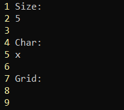

Those who enjoy Vim inevitably discovery the power and utility of its macro functionalities. Personally I use them to make coding and TeXing a smoother experience. One can, however, also explore them to see what kind of fun things we can create. Throughout this page, we will use red text to indicate special/escaped characters, e.g. ^[ for escape and ^M for enter.
Starting simple, let's say we want to create an \(n \times n\) grid of a certain character. How would we proceed? Well, at the moment, this question is somewhat ill-posed. We'll consider two scenarios. First, suppose we have a file that looks like the following.

Then storing the following sequence of characters into register a, and calling it as a macro gets the job done.